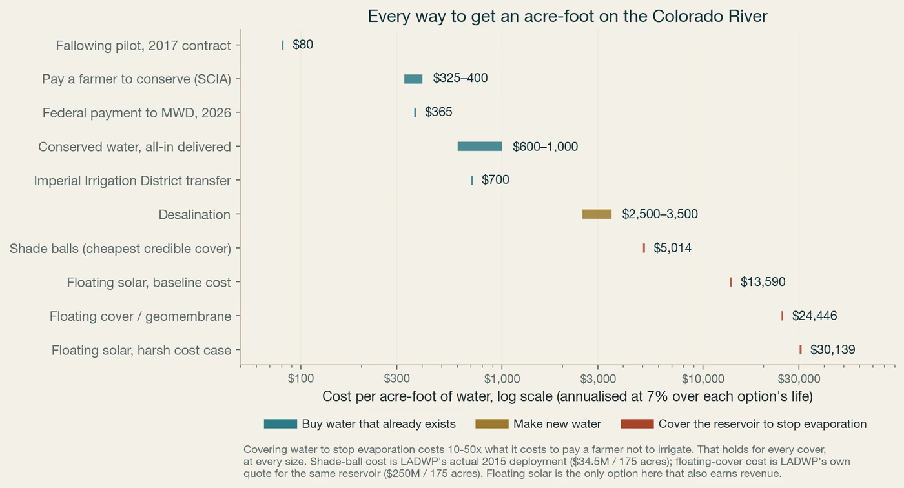

Every way to add water to the Colorado River, on one axis, with what makes each one financeable and what stops it.

Click to enlargeThe cheapest water is bought, not built. Anything that manufactures water or protects it from evaporating costs several times what it costs to pay someone to stop using it.
That ordering is stable. It survives every combination of cost, discount rate and performance assumption we sampled, and it holds at every reservoir. It is the first thing worth knowing before allocating anything, because it says that the binding constraint in basin water is not technology. Cheap water already exists. What is scarce is the contracting, measurement and verification that would let anyone buy it at scale.
Contracting now
What it is. Pay an irrigator to stop consuming. Fallowing, deficit irrigation, crop switching, or a permanent transfer. The water is already in the river. The transaction moves who gets to use it.
Can it be financed. Strong. There is a counterparty who pays per acre-foot, a price discovered in public board votes, and a measurable quantity. Reclamation's system conservation price and the federal fallowing payments are on the record.
Where it breaks. The constraint is not supply, it is verification. Paying for conservation only works if the saving is real, additive and shepherded to where it was promised. That is a measurement problem, and measurement is the cheapest thing on this page at roughly $120 per acre-foot.
Contracting now, long build
What it is. Treat a supply that was not previously usable. Advanced purification of municipal wastewater, or seawater desalination with an exchange agreement.
Can it be financed. Good, and it looks like conventional infrastructure. Municipal offtake, long-dated, rate-based, inflation-linked. Reuse in particular has a public counterparty with an obligation to serve.
Where it breaks. Capital-intensive and slow to permit. Reuse costs vary by more than twofold between projects depending on how far the water has to be moved and what it has to meet.
Not financeable as a water asset
What it is. Put something on the surface so less of it evaporates. Shade balls, floating covers, chemical films, or floating solar.
Can it be financed. Weak, and for a reason that is not mainly about cost. Water salvaged from evaporation on a mainstream federal reservoir cannot be held as private property: there is no mechanism under the 1922 Compact or the Arizona v. California decree for that, and the saving accrues to the system. That is a statement about property rights, not about contracts. A payer could in principle still contract for a measured service, the way system conservation payments already do, so the obstacle is that no such instrument exists for evaporation today and the saving is not yet measurable to the standard one would require. Both are solvable in principle. Neither is solved.
Where it breaks. Also the most expensive water on the river by a wide margin, and none of it has been demonstrated at the scale of a large fluctuating reservoir.
Cost per acre-foot sorts the options. It does not tell you which can carry capital. These do.
Conservation and reuse both have one. Evaporation suppression does not, because the water it saves belongs to the system rather than to whoever paid for the cover.
Consumptive-use reduction can be measured from satellite. Reuse volumes are metered. Evaporation suppressed under a floating array has never been measured at reservoir scale, and the physics is unhelpful: heat not lost as vapour warms the water and raises evaporation on the open surface nearby, so the saving is smaller than the shaded area implies.
The hardest question in conservation finance, and the one that decides whether a credit survives scrutiny. A fallowing contract in a year the field would have gone dry regardless is not a saving.
Most conservation payments are annual or short-term. Infrastructure capital wants a decade or more. The gap between the two is the single biggest structural obstacle in basin water finance, and it is a contracting problem rather than a technical one.
Notice that the third tier fails on the first two questions rather than on cost. The water it saves cannot be held as private property, and the saving has never been measured at reservoir scale. Neither is a cost problem, so neither is fixed by the technology getting cheaper. Both could in principle be addressed, the first by an instrument that pays for a measured service rather than for title to water, the second by actually instrumenting a reservoir. Until someone does, there is nothing to underwrite.
We spent considerable effort building an hourly model of floating solar across seven Colorado River reservoirs, on the expectation that covering water and generating power would prove complementary. It does not. The two benefits do not scale together: suppressed evaporation rises steadily with coverage while sellable energy stops at whatever the dam's transmission line can carry. Coverage targets of 15 to 20 percent, which circulate in policy discussion, exceed that bound at every reservoir we examined.
Propagating uncertainty across ten parameters, the median cost of water suppressed by floating solar is $16,486 per acre-foot at Lake Mead, with a P10 to P90 range of $11,939 to $23,568. That figure is already net of every dollar the panels earn selling power. Non-generating covers are cheaper and still do not close the gap:
| Option | Capital per acre | Life | Suppression | Cost per acre-foot, before any power revenue |
|---|---|---|---|---|
| Chemical monolayer (cetyl alcohol film) | $200 | 1 yr | 20% | $172 |
| Shade balls (hollow HDPE spheres) | $197,143 | 10 yr | 90% | $5,014 |
| Floating PV (this model, baseline cost) | $597,317 | 25 yr | 75% | $13,590 |
| Floating modular cover / geomembrane | $1,428,571 | 20 yr | 90% | $24,446 |
| Floating PV (reviewers' harsh cost case) | $1,214,058 | 25 yr | 75% | $30,139 |
Two of those numbers describe floating solar and they are not the same measurement. The table prices the cover alone, before any power revenue, at one generic reservoir acre. The $16,486 above is Lake Mead specifically, net of power sales, with the array sized against Hoover's actual transmission line rather than assumed to cover everything. The site-specific number is the higher of the two: the export limit costs more than the power revenue returns. That is the whole finding in one comparison.
One row there is not trustworthy, and it is worth saying so. The floating-cover figure comes from a utility's own quote to cover their own reservoir, which is a real number, but it prices a potable-water cover: sealed, tensioned, food-grade, built to isolate treated drinking water. An evaporation cover on a raw reservoir is a different and cheaper product. Read that $1.4 million per acre as a ceiling rather than a price. We found no published cost for a raw-water evaporation cover at reservoir scale, and two estimates for that row have now been wrong in opposite directions, so treat it as unresolved. Nothing below depends on it: shade balls are the cheapest credible cover either way, and they still lose to conservation by an order of magnitude.
Desalination beating every cover is the counterintuitive result, and the reason generalises. A cover's yield is capped by physics: an acre of covered water saves only the depth that would have evaporated off it, roughly 5.6 acre-feet a year in the Lower Basin, and no engineering improves that. A treatment plant has no such ceiling. Covers spread industrial capital across enormous areas to harvest a thin layer, which is why the category loses on cost before it loses on law.
We publish that finding because it went against the direction we started in. The full model, its uncertainty bounds, its validation against independent measurements and the findings of two rounds of outside adversarial review are on the technical paper, including the objections we have not resolved.
Verified agricultural conservation is the cheapest water in the basin and the constraint is measurement. Roughly three quarters of consumptive use is agricultural, so a ten percent reduction frees more than a million acre-feet, which is the largest single block available. The price is on the public record. What is missing is the verification infrastructure that turns a fallowing contract into an auditable, bankable acre-foot, and that infrastructure is the cheapest line on the chart.
Potable reuse is the closest thing in basin water to conventional infrastructure. Our screen of publicly reported treatment plants across the seven basin states identifies on the order of four hundred facilities at a scale where advanced purification is plausible, concentrated in Arizona, California, Colorado and Utah. That is a screen and not a diligenced pipeline: regulatory status differs by state, and most individual plants still need their reuse status confirmed before anyone should act on them. But the category has what the others lack, which is a public counterparty with an obligation to serve and a rate base to pay.
The structural gap is contract duration. Conservation payments are mostly annual. Infrastructure capital wants a decade or more. Nothing in the basin's current arrangements bridges that, and whoever builds the instrument that does will unlock the cheapest water on the chart. That is a financial engineering problem, not a hydrological one.
Independent work, built from public data. Reservoir surfaces measured from satellite imagery, evaporation from direct flux measurements where they exist, prices from published market and board records, and every model output validated against independently produced figures. The code and data are public and the assumptions are all exposed. Where a number is a screening estimate rather than a measurement, it says so.
{kind=link}